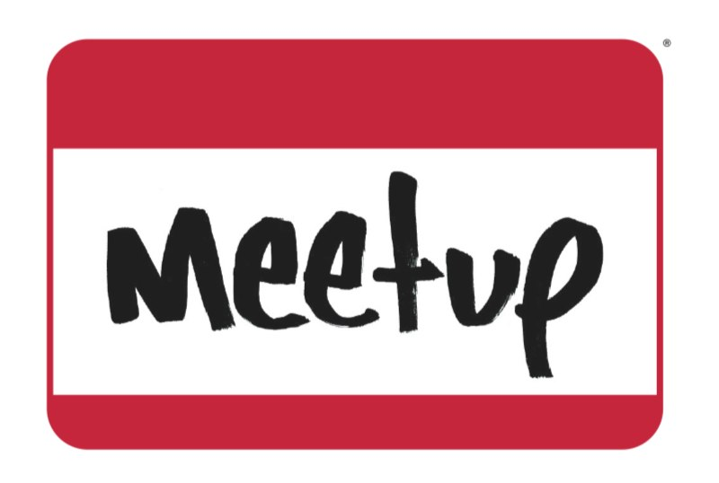

Working in
Web Development and New Media
Applying your IT Degree and Building a Personal Brand

Aram Zucker-Scharff. @Chronotope. #GMU
Currently:
- Chief Technical Officer for AIR Networks, LLC
- Freelance Web Developer
- New Media Consultant
Previous Experience (Consulting):
- United Press International
- Real Estate Weekly newspaper
- OneBlueTV
Previous Experience:
- 2011: Assistant Director for Marketing and Communications, Office of Student Media, George Mason University
- 2010: Community Manager, Office of Student Media, George Mason University
- 2010: New Media Manager, UPIU, United Press International
- 2008-2010: Technology Manager, Office of Student Media, George Mason University
- 2007-2009: Resident Technician, ITU, George Mason University
- 2006-2009: Various editorial positions, Office of Student Media, George Mason University
Maintain and Increase Skills
The beginning of your degree.
2 years
2 years
The end of your degree.
In 2005: WordPress was a niche product used by some bloggers.
In 2011: WordPress is behind 25% of all websites.
Keep up to date on your specialty
- Read trade publications.
- Follow relevant feeds.
- Google Reader
- Feedly
- Watch Keywords
- Google Alerts
- Twitter Search
- Delicious
You don't want your employer to be telling you about new things in your field.
Gain new knowledge
Follow industry trends and look at the best examples in the field.
- Smashing Magazine
- Sitepoint
- O'Reilly
- Codecademy
- Quora
- stackoverflow
- And many more...
Are you ready?
There are some things you should do before you graduate:
A completed and spell-checked resume.
A completed LinkedIn profile.
A project you've collaborated with others on that you'd be proud to show off.
Are you ready?
Set up a GitHub account and work on or build at least one open-source project.
- Allows employers to see your code work.
- Shows knowledge of version control software.
- GitHire

Network, Network, Network
Meetup.com can be a powerful tool.
Find opportunities everywhere.
Always bring business cards.
Personal Branding
Any employer is going to be able to find out a lot about you. This can include things you've forgotten, or you think hidden.
A great test is to install the plugin rapportive and run it on your own email.
Remember, this is a free consumer tool.
What do you want employers to see when they Google you?
Control it using SEO and SMO
The First tools:
- A website with a domain similar to your name.
- A completed Google+ profile.
- A blog.
- A Twitter account.
Got extra time?
What do you want employers to see when they Google you?
Control it using SEO and SMO
Search Engine Optimization is a very useful skill when seeking employment.
My presentations:
What do you want employers to see when they Google you?
Control it using SEO and SMO
Social Media Optimization is important.
Use as many social platforms as you can handle in a professional manner.
Twitter, Facebook and Google+ should be at the top of the list. Followed closely by Pinterest, StumbleUpon and reddit.
~2 hours - Daily spent curating and sharing on industry topics.
Be your own brand.
- Know how you're graded. Check Klout.
- Be:
- Constant
- Professional
- Reciprocal
- Critical
- Quick
- My system: MEGA. Monitor, Engage, Grow, Be Active.
Be your own brand.
Tools for better social media use:
- HootSuite
- MetroTwit
- Buffer
- Twitter lists
- ThinkUp
- A variety of start pages.
Web developer toolkit
- Code editor: Either Notepad++ or Brackets.
- Remote server for testing. Connect with FileZilla.
- Local server for testing.
- GitHub and GitHub Shell (or some other form of version control).
- Multiple screens.
- SEO Testing Tools, like SEO for Chrome.
Have a local server
No downtime between implementation and testing.
Only you see your worst mistakes.
Generally easier to manipulate.
Test your code!
You can't be browser-biased. Build for everyone.
Useful to have local servers on a number of virtual machines as well, to test how your work reacts in different environments.
A few Amazon Web Services (AWS) cloud instances may be very useful for the same reason.
Dave Winer (the father of RSS) has a very simple tutorial to get you set up on the cloud: EC2 for Poets.
Web Development Trends
- Responsive Design
- HTML5 and CSS3
- jQuery
- Use of WordPress
- Twitter Bootstrap
- Python and Django
Freelancing, Tips and Tools
Freelancing: Be task oriented
Have a task manager. It can be a .txt file. More useful:
Remember the Milk or Asana
I use the Getting Things Done system to deal my inbox.
I aim for "Zero Inbox" and divide my email into:
- Do it
- Defer it
- Delegate it
- Drop it
Some preferThe Pomodoro Technique, breaking work down into 25 minute increments.
Freelancing: Even more networking.
To find and attract clients, you'll have to spend more time going to events and finding opportunities to network.
Collect business cards and grow your LinkedIn.
Even more attention needed for social media.
Keep an eye out for local or easy to get to conferences. Also, opportunities to explore co-working spaces.
Next big opportunity: DCWEEK.
Freelancing: In DC, volunteering can be profitable.
The DC area has a lot of non-profit and low budget organizations. Groups like Code for America, the Sunlight Foundation, HubDC, and various political or issue groups often hold hackathons or coding for social good events.
By attending, not only do you get to do good, but also meet potential employees, clients and collaborators.
Questions?
Find this presentation at http://aramzs.me/seo201
Aram Zucker-Scharff
- aramzs@hacktext.com
- @Chronotope